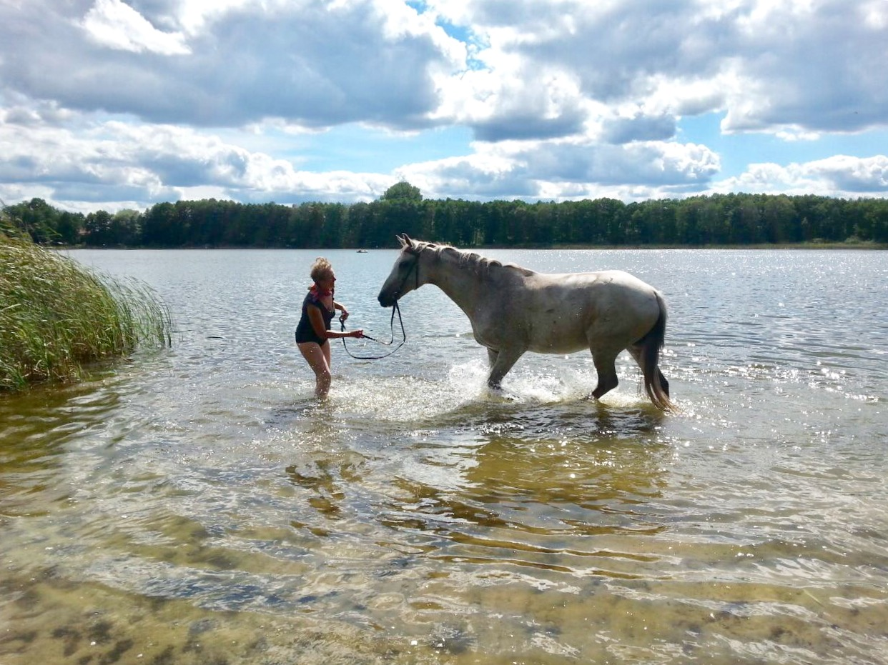

Alexander-Technik und Reiten
Nachhaltig und egal in welchem Lebensalter findest du mit der Alexander-Technik einen Weg, unnötige Anspannungen und Angewohnheiten wegzulassen.
Das heißt:
- Den Körper zu entlasten und mehr Leichtigkeit in die Bewegungen zu bringen,
- die natürliche Balance zu fühlen und zu verstehen,
- eine ausgewogene psycho-physische Koordination zu erlangen,
- sich selbst und das Pferd klarer wahrzunehmen, die Dinge so sehen, wie sie wirklich sind,
- Aufgaben und Lektionen ruhiger und bewusster angehen zu können.

Unterstützung beim Reiten und in der Bodenarbeit:
- für Gelassenheit, Achtsamkeit und Erdung,
- für ein sicheres Balance-Gefühl und einen kontinuierlich ausbalancierten Zustand,
- für ein freies und natürliches Atmen,
- für die Koordination von Hand und Schenkel, und
- für einen stabilen Zustand von Balance, Kraft und Achtsamkeit,
So kannst du immer besser den Takt und Rhythmus deines Pferdes spüren, kannst es lösen, immer weniger die Anlehnung und den Schwung stören, das Pferd besser gerade richten und dann versammeln. 🙂
„Zum richtigen, natürlichen Gleichgewicht kann man die größere Hälfte seines Lebens zu Pferde verbringen, und wird bis ins hohe Alter hinein noch immer jugendlich frisch erscheinen.“
— Gustav Steinbrecht, Das Gymnasium des Pferdes, 1884
Interview im „Pferdespiegel“
„Alexander-Technik verändert das Körperbewusstsein und die Denkgewohnheiten“
mit Saskia Blank
Saskia Blank: Wenn wir aufhören, das Falsche zu tun, geschieht das Richtige von ganz allein. (Frederick Matthias Alexander)
Dieses Zitat ist mir von meinem Besuch des Workshops „Alexander-Technik für Reiter“ ganz besonders in Erinnerung geblieben. Auch wenn es sich bei der Alexander-Technik um eine Methode „zur nachhaltigen Veränderung von Haltungs- und Bewegungsgewohnheiten“ handelt, finde ich, dass dieser Satz von dem Begründer der Methode auch in vielen anderen Lebenssituationen seine Berechtigung findet.
Ich hatte mich völlig unvoreingenommen und erwartungsfrei zu dem Workshop angemeldet...
Liebe Charlotte, zunächst möchte ich Dir danken, dass Du Dir die Zeit für dieses Interview nimmst. Kannst Du meinen Lesern erklären, worum es bei der Alexander-Technik geht?
Charlotte Blickensdorf: Der Dank ist auf meiner Seite. Den Workshop mit Euch habe ich sehr genossen. Was die Alexander-Technik ist, hast Du ja vorhin schon perfekt formuliert. Alexander-Technik verändert das Körperbewusstsein und die Denkgewohnheiten. Es geht nicht um Haltung. Wir werden in die Lage versetzt, selbst zu bestimmen, was vorher automatisch oder reflexartig ablief.
Ja, bei mir ist es zum Beispiel so, dass mir immer wieder gesagt wurde, dass ich die Schultern nicht so nach oben ziehen soll. Ich habe dann versucht sie aktiv nach unten zu ziehen, was noch mehr Anspannung verursacht hat.
Charlotte Blickensdorf: Genau, meiner Erfahrung nach erleben Reitschüler einen solchen Vorgang oft auch im Unterricht: Dann, wenn die ReitlehrerInnen in jeder Stunde mehr oder weniger das Gleiche sagen. ...Und wenn wir uns dagegen betrachten, wie leicht und gelöst kleine Kinder reiten, wird der Unterschied klar. Mit Hilfe der Alexander-Technik lernen wir „zurück“.
Lesen Sie das vollständige Interview auf Anfrage oder bei einem Besuch.